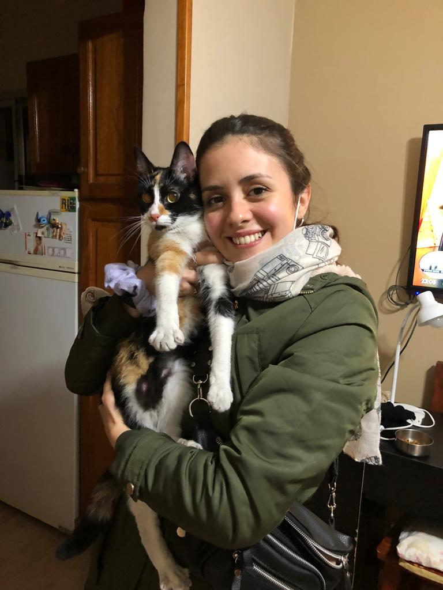
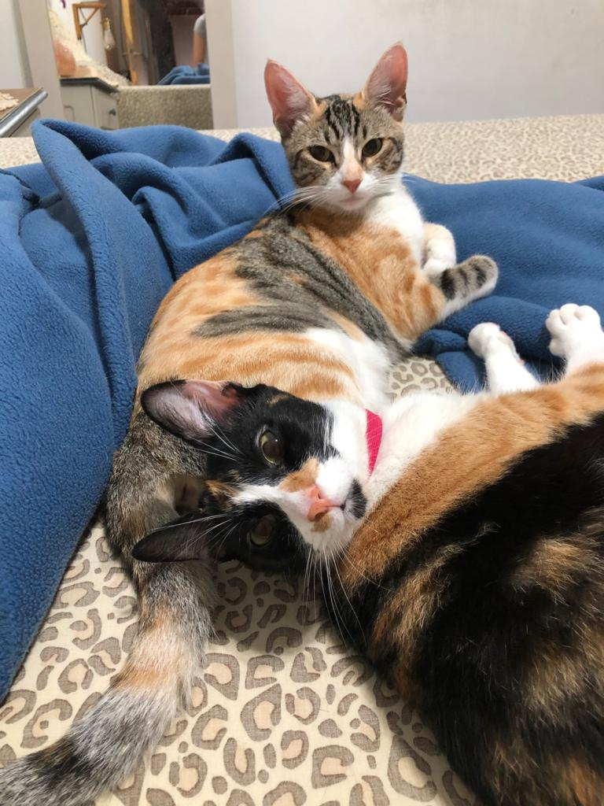
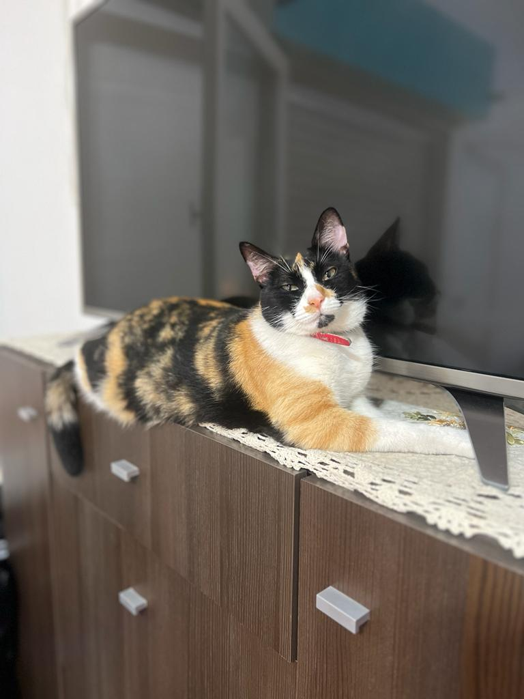

Corona, su dueña Sol y su amiga Gina
Había una vez una gata tricolor llamada Corona, con un pelaje suave y esponjoso que la hacía parecer una adorable bola de algodón. Corona era una gata gordita y le encantaba comer y dormir más que cualquier otra cosa en el mundo. Pero a pesar de su amor por la comida y la comodidad, tenía una pasión especial: la cocina.
Corona vivía con su cariñosa dueña, María Sol, quien también compartía su amor por la comida. María Sol era una talentosa chef y, desde que Corona llegó a su vida, se convirtieron en compañeras inseparables en la cocina. Juntas, preparaban deliciosos manjares y experimentaban con nuevos sabores y recetas.
Aunque Corona disfrutaba de su tiempo en la cocina, era una gata independiente y le encantaba explorar los alrededores de su hogar. Fue durante una de sus escapadas cuando conoció a Gina, una gata callejera de espíritu libre. Las dos gatas se hicieron amigas de inmediato y compartían su pasión por la comida y la aventura.
Corona y Gina se embarcaban en emocionantes excursiones gastronómicas. Juntas, exploraban el vecindario en busca de los mejores lugares para comer. Probaban desde exquisitos platos en restaurantes elegantes hasta sencillos pero sabrosos bocadillos callejeros. Cada descubrimiento era una nueva experiencia culinaria que fortalecía su amistad.
Pero incluso en medio de sus travesuras culinarias, Corona siempre tenía en su mente a María Sol, su adorada dueña. Cuando regresaba a casa, buscaba el regazo de María Sol y se acurrucaba junto a ella. María Sol acariciaba a Corona y le decía cuánto la amaba, y la gata respondía con ronroneos de felicidad.
Corona y María Sol formaban un equipo imparable en la cocina. La gata aprendió a mezclar ingredientes, preparar salsas y probar los platos para asegurarse de que estuvieran perfectos. Su especialidad eran los pasteles de pescado, una delicia que encantaba a todos los que los probaban.
A medida que pasaba el tiempo, Corona se dio cuenta de cuánto significaba María Sol en su vida. No solo era su dueña, sino también su mejor amiga y compañera de aventuras culinarias. La gata le mostraba su amor a través de ronroneos y frotándose cariñosamente contra ella.
Así, la historia de Corona, la gata tricolor gordita y esponjosa, se tejió con hilos de amor, amistad y pasión por la cocina. Su independencia, su vínculo inquebrantable con María Sol y su amistad con Gina hicieron de su vida una aventura llena de sabores exquisitos y momentos inolvidables